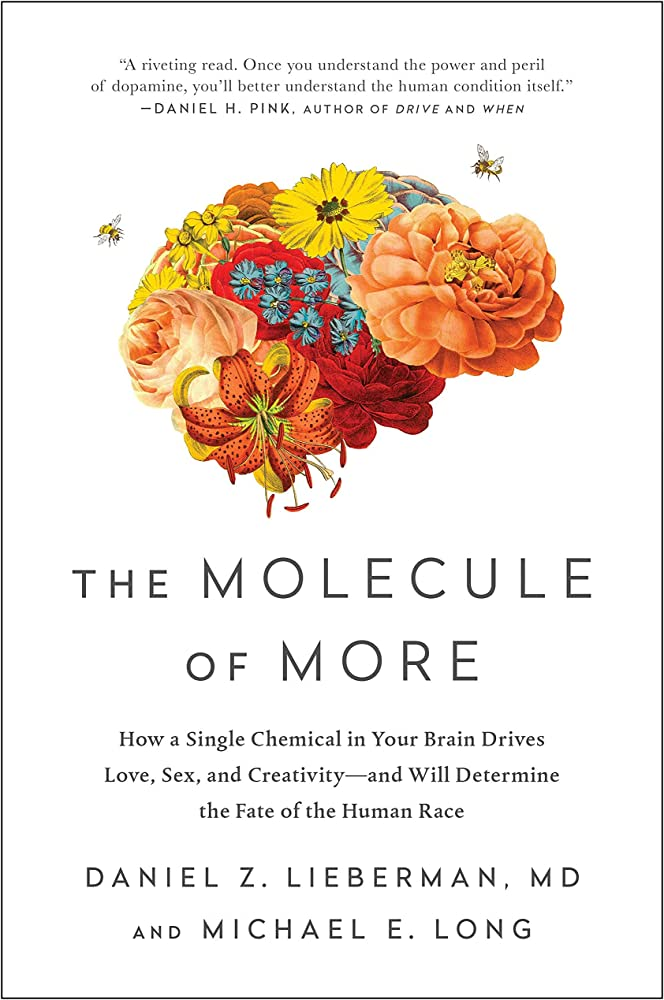

-
Atomic Habits
It offers a proven framework for improving every day. It contains practical strategies that will teach you exactly how to form good habits, break bad ones, and master the tiny behaviors that lead to remarkable results.
-
The Art of Thinking Clearly
A world-class thinker counts the 100 ways in which humans behave irrationally, showing us what we can do to recognize and minimize these “thinking errors” to make better decisions and have a better life.
-
Steve Jobs
A riveting story of the roller-coaster life and searingly intense personality of a creative entrepreneur whose passion for perfection and ferocious drive revolutionized six industries: personal computers, animated movies, music, phones, tablet computing, and digital publishing.

-
The Molecule of More
Much of human life has an unconsidered component that explains an array of behaviors previously thought to be unrelated, including why winners cheat, why geniuses often suffer with mental illness, why nearly all diets fail, and why the brains of liberals and conservatives really are different.
